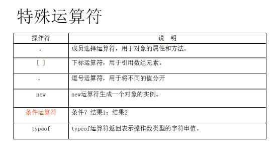

JavaScript とは？
JavaScript は、オブジェクトベースでイベント駆動型の、安全性を備えたスクリプト言語です。
JavaScript の正式名称は「ECMAScript」です（ECMA は欧州コンピュータ製造者協会です）。
JavaScript の特徴：
- スクリプト言語である
- オブジェクトベース
- 動的である
- 簡潔で使いやすい
- 安全性
- クロスプラットフォーム性
- ユーザーエクスペリエンスの向上
JavaScript スクリプト言語は他の言語と同様に、独自の基本データ型、式、算術演算子、およびプログラムの基本的な枠組みを持っています。JavaScript は、データと文字を処理するために、4 つの基本データ型と 2 つの特殊データ型を提供します。変数は情報を格納する場所を提供し、式はより複雑な情報処理を実行できます。
JavaScript と Java の違い
Java コードは実行するためにコンパイルが必要ですが、JavaScript はコンパイル不要で、ブラウザが解釈して実行するだけです。
Java と JavaScript はどちらもサーバーとクライアントの両方で実行できますが、Java は主にサーバー側で実行され、JavaScript は主にクライアント側で実行されます。
JavaScript は緩やかな型付けのデータ型を使用しますが、Java は厳密なデータ型を使用します。
JavaScript データ型
- 基本データ型（3種）
- 複合データ型（2種）
- 特殊データ型（2種）
複合データ型
- 配列
- オブジェクト
特殊データ型
- 空 null
- 未定義
変数の命名規則
- 変数名には、大文字小文字の英字、数字、$、アンダースコアのみを含めることができますが、数字で始めることはできません。
- 大文字と小文字を区別します。例：A と a は異なる変数です。
- 不正な命名：my-name 76person 007
- 有効な命名： $wu var_name _dum v108
変数の宣言
- var を使用して宣言します
変数のデータ型を宣言する必要はなく、使用時または代入時にそのデータ型が決定されます。
var a = 18 ; //a为数值型 var b = "tom" ; //b 为字符串 var c = true ; //c为布尔型
- グローバル変数とローカル変数
- ローカル変数は関数内で宣言され、var を使用して宣言する必要があります。
- グローバル変数は関数外で宣言され、var を使用して宣言する必要はありません。
特殊演算子

条件及びループ制御文
JavaScript 文は、基本的なプログラム制御と操作機能を実装するために使用されます。
- if 条件選択文
- switch 選択文
- do…while 文
- while ループ文
- for ループ文
- for(..in..) 文
- break 文と continue 文
if 選択文
条件選択文1：
if（expression）
{
statements
}
条件選択文2：
if（expression）
{
statements
}
else
{
statements
}
条件選択文3：
if（expression1）
{
statements
}
else if （expression2）
{
statements
}
else if （expression3）
{
statements
}
else
{
statements
}
switch 選択文
switch(表达式)
{
case:语句
break;
case:语句
break;
……
default:语句
}
do…while 文
まず文を実行し、次に条件式が false になるまでその文を繰り返し実行します。
do
{
语句
}
while(条件判断);
while循环语句
while语句执行的时候，直到指定的条件为false为止。其用法如下：
while(条件)
{
语句
}
for ループ文
for 文は、条件が false になるまで文のループを実行します。
使用法は次のとおりです：
for([初始表达式];[条件];[增量表达式])
{
语句
}
for(..in..) 文
オブジェクトの各プロパティ、または配列の各要素に対して、1 つ以上の文を実行します。
使用法は次のとおりです：
for (variable in [object | array])
{
语句
}
break と continue 文
break 文は現在の while、for、do…while ループを終了し、ループを直接抜けて、ループの次の文を実行します。
continue 文は今回のループを終了します。